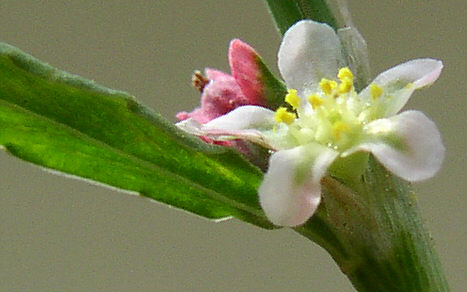

La renouée des oiseaux ou polygonum aviculare est encore appelée populairement traînasse, tirasse ou herbe à cochon. Cette mauvaise herbe annuelle glabre très commue pousse aussi dans les terrains vagues , les bords de chemins, les sols nus, les plages, etc... (parfois résistante aux herbicides).
Elle appartient à la famille des polygonacées.
Ses longues tiges ramifiées et souples, souvent couchées ou redressées quand elles manquent d'espace ne dépassent pas 30 cm de haut. Elles sont renflées au niveau des nœuds, ce qui justifie le nom scientifique polygonnum (poly = plusieurs , gonum = genou).
Les petites feuilles alternes ont une forme lancéolée avec des nervures peu visibles sauf la principale ; leur court pétiole est masqué par une gaine qui enveloppe le nœud, on l'appelle une ochréa.
Celle-ci a un aspect argenté et effiloché, sa surface est peu nervurée.
Les fleurs minuscules, à l'aisselle des feuilles, sont blanches ou roses.
Les fruits sont des petites capsules à 3 arêtes entièrement protégées par le calice persistant.; ils sont picorés par les oiseaux.
La renouée des oiseaux a des propriétés astringentes, vulnéraires et hémostatiques.
Deux autres espèces sont très voisines :
- polygonum oxyspermum dont les feuilles sont un peu enroulées vers le bas, l'ochéa est plus courte et les fruits brillants dépassent le calice.
- polygonum rurivagum dont l'ochréa et les fleurs sont rougeâtres, ses fruit globuleux dépassent le calice.